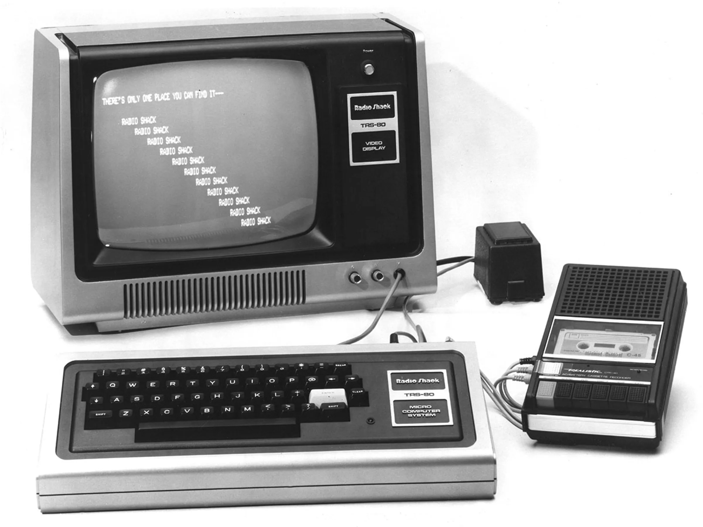
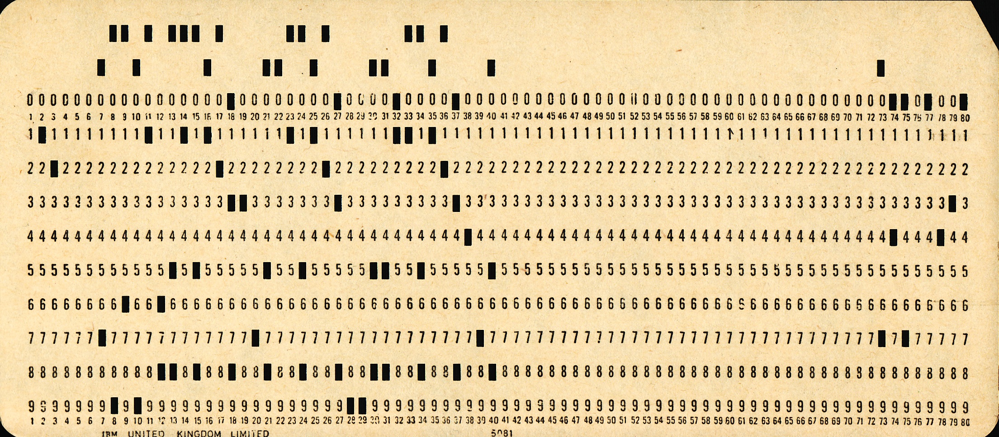
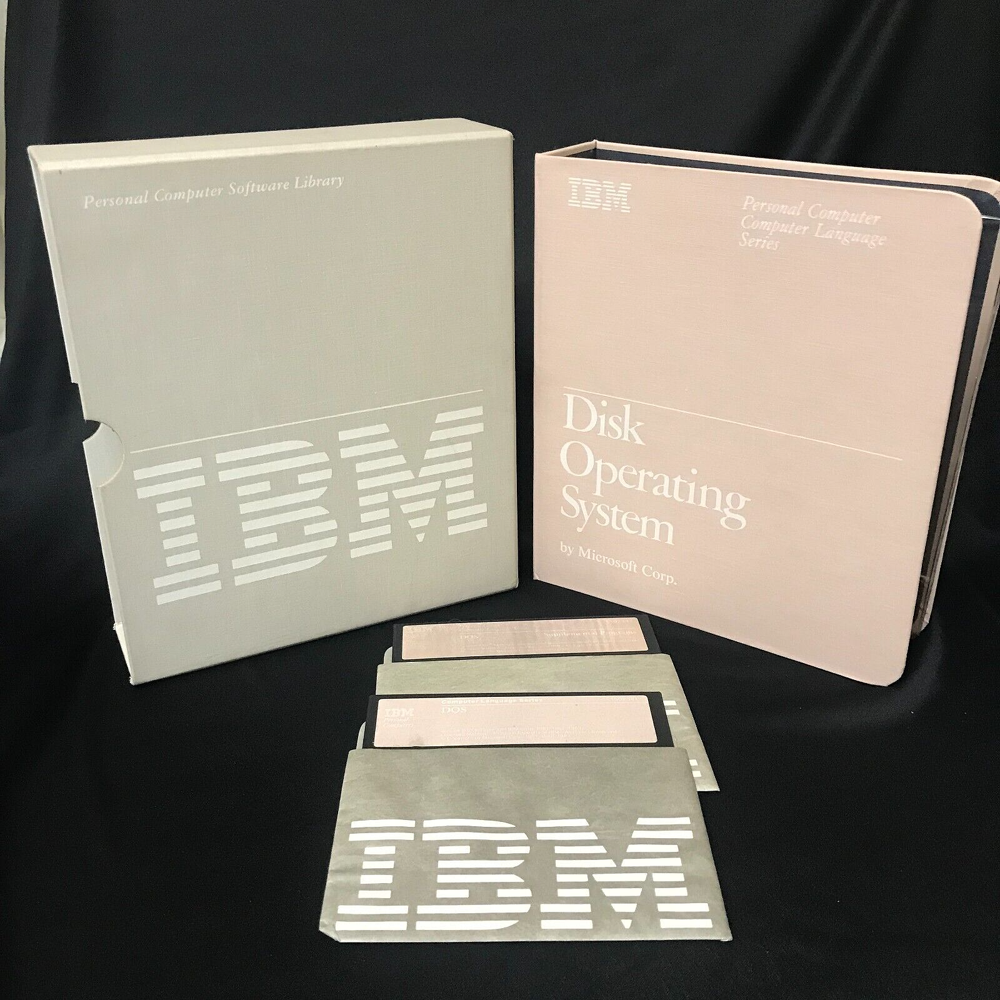

In 1979, thanks to Professor Jim Frogge, Bishop McNamara High School, I learned BASIC programing on a Radio Shack TRS-80 Model 1

PHOTO: COMPUTER HISTORY MUSEUM Coutesy
IEEE Spectrum
In 1983, at Eastern Illiniois University I wrote my first FORTRAN program using IBM punch cards. Yes, I numbered my cards.

PHOTO: Pete Birkinshaw from Manchester, UK - Used Punchcard
During my 1984 Christmas Break my dad, who worked for AT&T brought home this manual, I read it, took a bunch of notes in a spiral notebook, learned how to batch program, and used that notebook for years.

PHOTO Coutesy humble-pieIBM Disk Operating System
I work full time as a sales representative.
I am a self taught developer working as an independent contractor.
I went to school at Eastern Illinois University where I obtained a Bachlor of Science Degree and a minor in Military Science.
I spent one tour in Germany as an Armor Officer in the United Stated Army.I am an active membor of the 37th Armor Alumni Association.
I have worked for Alcoa, Performance Friction, Inc., Braks Parts Inc., Industrial Supply Solutions Inc. and Genuine Parts Company.
I have been a Maintenance Planner and Scheduler, a Buyer, a Production Supervisor, an Inside Sales Man, an Outside Salesman, a Tesrritory Manager, and a District Sales Manager.
In my free time I golf, and play guitar.